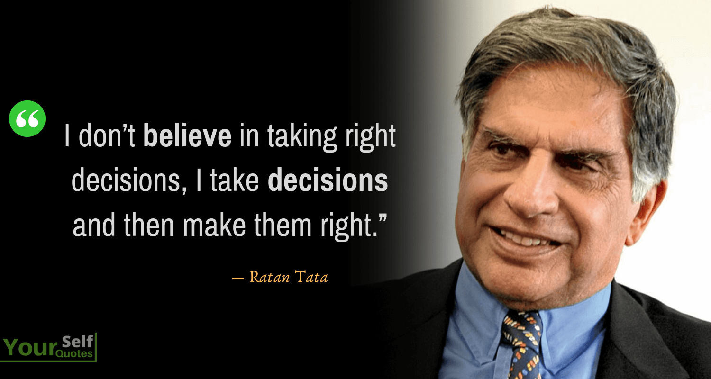

Mr. Ratan Tata is an Indian industrialist, philanthropist, and former Chairman of Tata Sons, the holding company of the Tata Group, one of India's largest conglomerates. He is also known for his philanthropic work through the Tata Trusts, which support various social initiatives in healthcare, education, and livelihoods.

Tata studied in Campion School, Mumbai till 8th standard and then in Cathedral and John Connon School, Mumbai and at Bishop Cotton School in Shimla. He graduated from Riverdale Country School in New York City in 1955.

Became the Chairman of Tata Sons, succeeding his uncle J.R.D. Tata.
Launched the Tata Indica, India's first indigenous passenger car.
Acquired Tetley, a British tea company, for $450 million, marking the Tata Group's entry into the global market
Launched the Tata Nano, the world's most economical car, designed to make car ownership more accessible to the masses in India.
Acquired luxury car brands Jaguar and Land Rover from Ford for $2.3 billion, making the Tata Group a major player in the global automotive industry.

In recognition of his contributions, Mr. Tata has received numerous honors, including the Padma Bhushan and Padma Vibhushan, two of India's highest civilian awards, and the Carnegie Medal of Philanthropy.
Donated $50 million to aid in the fight against the COVID-19 pandemic in India. Throughout his career, Mr. Tata has also been actively involved in philanthropic work through the Tata Trusts, which support various social initiatives in healthcare, education, and livelihoods.
Mr. Ratan Tata is a well-known industrialist, philanthropist, and business leader in India. He is the former Chairman of Tata Sons, the holding company of the Tata Group, one of the largest conglomerates in India.
Mr. Tata's contributions to India are numerous and significant. Under his leadership, the Tata Group expanded and diversified its business interests, becoming a global brand with a presence in over 100 countries. Some of the notable companies under the Tata Group include Tata Motors, Tata Steel, Tata Consultancy Services, and Taj Hotels.
Apart from his business achievements, Mr. Tata has also been a great contributor to the social and economic development of India. He is a well-known philanthropist who has donated generously to various causes, including education, healthcare, and disaster relief. The Tata Trusts, which he chairs, are among the largest charitable organizations in India, and they work towards improving the quality of life of the underprivileged.
Mr. Tata has also been instrumental in promoting innovation and entrepreneurship in India. He established the Tata Nano, the world's cheapest car, with the aim of making mobility accessible to millions of people in India. He has also invested in numerous startups and founded the Tata Group's venture capital arm, Tata Capital.
In recognition of his contributions to India, Mr. Tata has received numerous awards and honors, including the Padma Bhushan and Padma Vibhushan, two of India's highest civilian awards. He is widely respected and admired in India and around the world for his vision, leadership, and philanthropy.
In conclusion, Mr. Ratan Tata is an exceptional leader who has made significant contributions to India through his business acumen, philanthropy, and innovation. His legacy will continue to inspire generations of Indians to come.